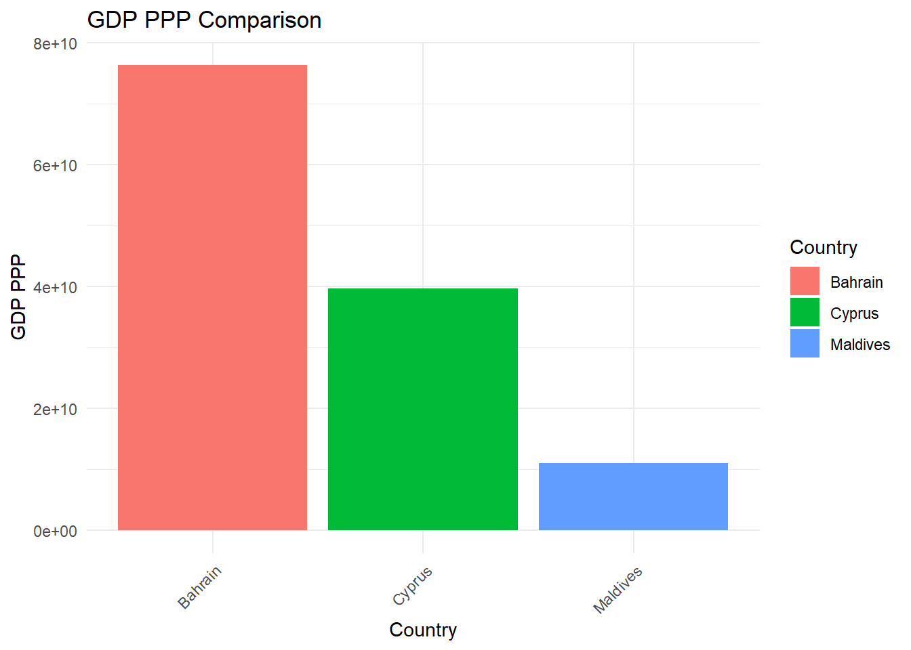
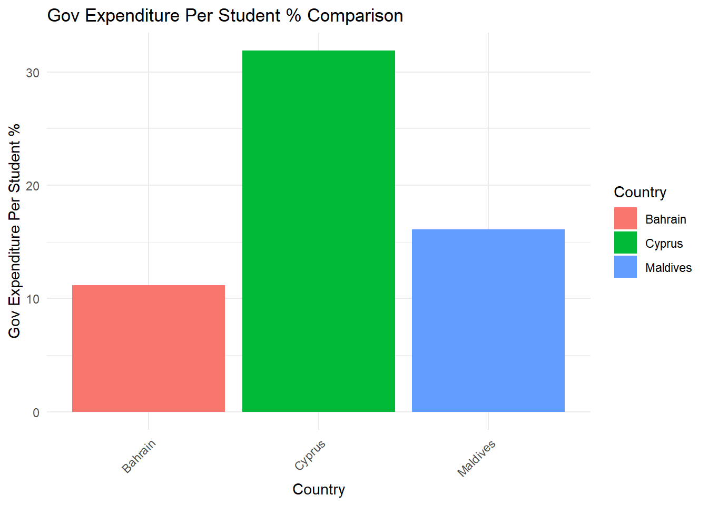
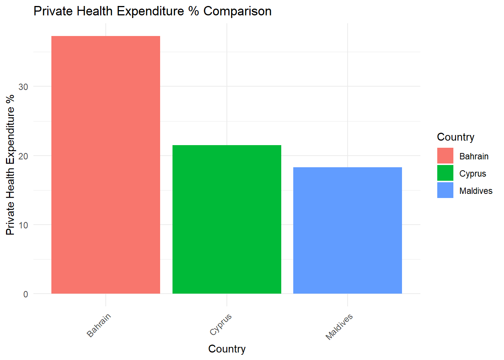

library(ggplot2)
library(maps)
world_map <- map_data("world")
ggplot() +
geom_polygon(data = world_map, aes(x = long, y = lat, group = group), fill = "white", color = "black") +
geom_point(data = data.frame(long = 50.5833, lat = 26.2167), aes(x = long, y = lat), color = "red")+
annotate("text", x = 50.5833, y = 26.3167, label = "Bahrain", hjust = 0, vjust = 0, size = 4,color = "red") +
theme_minimal()Bahrain
General description
map of Bahrain in the world
interactive map of Bahrain
library(leaflet)
leaflet() %>%
addTiles() %>%
addMarkers(lng = 50.5833, lat = 26.2167, popup = "Manama, Bahrain")Key facts
Geography and History:Bahrain is a small Arab state in the Persian Gulf, consisting of Bahrain Island and about 30 smaller islands. Historically, Bahrain has been an important trading center, believed to be the site of the ancient Dilmun kingdom, and has been ruled by the Khalīfah family since the late 18th century.
Land and Climate:The total land area of Bahrain is slightly greater than Singapore, extending about 30 miles from north to south and 10 miles from east to west. The climate features hot and humid summers, with cooler, more pleasant winters. Rainfall is limited, mostly confined to the winter months.
Natural Resources and Economy:Despite being in a prime oil-producing region, Bahrain has only small petroleum reserves and primarily processes crude oil from neighboring countries. The financial, commercial services, communications sectors, and tourism have grown significantly.
Flora and Fauna:The country supports a variety of desert plants, fruit trees, and vegetable gardens, with limited animal life adapted to desert conditions.
Demographics and Culture: Roughly half of Bahrain’s population is Arab, with a significant proportion of foreign-born residents from Iran, India, Pakistan, Britain, and the United States. Arabic is the official language, with English widely used as a compulsory second language in schools.
Key demographics
library(readr)
library(ggplot2)
library(dplyr)
library(tidyr)
data_df <- read_csv("API_BHR_DS2_en_csv_v2_6262972.csv")Population, Urbanization, and GDP
key_indicators <- c('Population, total', 'Urban population (% of total population)',
'GDP (current US$)', 'GDP per capita (current US$)', 'GDP growth (annual %)')
key_data_df <- filter(data_df, Indicator_Name%in% key_indicators)
key_data_long <- key_data_df %>%
select(-c("Name", "Code", "Indicator_Code")) %>%
gather(key = "Year", value = "Value", -"Indicator_Name")
plot_indicator <- function(data, indicator_name) {
indicator_data <- filter(data, Indicator_Name== indicator_name)
p <- ggplot(indicator_data, aes(x = as.numeric(Year), y = Value)) +
geom_line(size = 1) +
theme_light(base_size = 14) +
theme(axis.text.x = element_text(angle = 45, hjust = 1, vjust = 1),
plot.title = element_text(size = 16, face = "bold")) +
scale_x_continuous(breaks = seq(min(as.numeric(indicator_data$Year)), max(as.numeric(indicator_data$Year)), by = 5)) +
labs(title = paste(indicator_name, "in Bahrain"), x = "Year", y = "Value")
return(p)
}
for(indicator in key_indicators) {
print(plot_indicator(key_data_long, indicator))
}
Total Population Growth: The first graph illustrates Bahrain’s total population over time, which shows a consistent upward trend. Starting from 1980, the population has increased steadily, suggesting a stable rise in residents. This could be attributed to various factors such as natural population growth and immigration.
GDP and GDP Growth Rate: The top middle graph represents Bahrain’s Gross Domestic Product (GDP) in current US dollars, alongside the GDP growth rate depicted as a percentage. The GDP graph indicates substantial economic growth over the years, with some fluctuations in the growth rate. The GDP growth rate appears quite volatile, with periods of significant expansion followed by occasional contractions, reflecting the dynamic nature of Bahrain’s economy.
Urban Population Percentage: The third graph shows the percentage of Bahrain’s population that is urban. It indicates a steady increase in urbanization from the 1980s to the present, with the urban population now constituting a dominant portion of the total population. This trend reflects global urbanization patterns and suggests a concentration of the population in urban areas, likely due to the availability of jobs, services, and amenities.
GDP Per Capita: The bottom right graph displays the GDP per capita in current US dollars. There has been a general upward trajectory, particularly noticeable from the 2000s onward, indicating an increase in the average economic output per person. This suggests that the standard of living and the overall wealth of the average citizen in Bahrain might have improved over time.
- In summary, these graphs collectively depict a nation that has experienced significant economic development, a growing and increasingly urban population, and an improvement in wealth per capita. Bahrain’s economic indicators suggest a robust and developing economy with a strong urban sector.
Unemployment, Inflation, and Trade Balances
# Filtering for Unemployment, Inflation, and Trade Balances
additional_indicators <- c('Unemployment, total (% of total labor force) (national estimate)',
'Inflation, consumer prices (annual %)',
'Current account balance (BoP, current US$)',
'Exports of goods and services (% of GDP)',
'Imports of goods and services (% of GDP)')
additional_data_df <- filter(data_df, Indicator_Name %in% additional_indicators)
# Melting data for ggplot
additional_data_long <- additional_data_df %>%
select(-c(Name, Code, Indicator_Code)) %>%
gather(key = "Year", value = "Value", -Indicator_Name)
# Plotting each indicator separately
for(indicator in additional_indicators) {
indicator_data <- filter(additional_data_long, Indicator_Name == indicator)
p <- ggplot(indicator_data, aes(x = as.numeric(Year), y = Value)) +
geom_line(size = 1) +
theme_light(base_size = 14) +
theme(axis.text.x = element_text(angle = 45, hjust = 1, vjust = 1),
plot.title = element_text(size = 16, face = "bold")) +
scale_x_continuous(breaks = seq(min(as.numeric(indicator_data$Year)), max(as.numeric(indicator_data$Year)), by = 5)) +
labs(title = paste(indicator, "in Bahrain"), x = "Year", y = "Value")
print(p)
}
Current Account Balance: This graph illustrates Bahrain’s current account balance in US dollars. It shows significant fluctuations over time with a peak around 2008 followed by a sharp decline, which may indicate a period of substantial trade surplus that then shifted towards a deficit or a reduced surplus. This could be reflective of changes in global oil prices, given Bahrain’s economic reliance on petroleum exports.
Inflation Rate: The second graph depicts the inflation rate based on consumer prices. There are notable spikes in inflation, particularly one around the early 1990s and another significant peak around 2008. Following 2008, the inflation rate seems to have stabilized to a lower level. These peaks could correlate with global economic events or shifts in domestic economic policy.
Exports of Goods and Services: The top right graph presents exports of goods and services as a percentage of GDP. There’s a marked increase in the mid-2000s, indicating a period of heightened export activity relative to the size of the economy. This could suggest a boom in the demand for Bahrain’s exports or an increase in global commodity prices.
Unemployment Rate: The bottom left graph shows Bahrain’s unemployment rate as a percentage of the total labor force. The unemployment rate seems relatively low with a few upward ticks. Notably, there’s a sharp decline in the reported rate after 2000. This could be due to a variety of factors including changes in labor market policies, economic diversification, or shifts in the demographic composition of the workforce.
Imports of Goods and Services: The last graph illustrates imports of goods and services as a percentage of GDP. There is a clear decline in imports from the 1980s through the 2000s, followed by a more variable pattern in recent years. The decline might reflect an improvement in domestic production or a change in economic structure, while the variability in recent years could be indicative of fluctuating market conditions or changing trade policies.
- In summary, the economic indicators suggest Bahrain has gone through various economic phases characterized by shifts in trade balances, inflation rates, export and import activities, and unemployment rates. The data points to an economy that has dealt with external and internal challenges, with the effects of global market changes being quite evident. Importantly, the trends suggest periods of economic prosperity as well as times of adjustment and stabilization, which are common in economies with a strong focus on international trade and oil exports.
Education
# Filtering for Education
further_indicators <- c('School enrollment, secondary (% gross)',
'School enrollment, primary (% gross)')
further_data_df <- filter(data_df, Indicator_Name %in% further_indicators)
# Melting data for ggplot
further_data_long <- further_data_df %>%
select(-c(Name,Code,Indicator_Code)) %>%
gather(key = "Year", value = "Value", -Indicator_Name)
# Plotting each indicator separately
for(indicator in further_indicators) {
indicator_data <- filter(further_data_long, Indicator_Name == indicator)
p <- ggplot(indicator_data, aes(x = as.numeric(Year), y = Value)) +
geom_line(size = 1) +
theme_light(base_size = 14) +
theme(axis.text.x = element_text(angle = 45, hjust = 1, vjust = 1),
plot.title = element_text(size = 16, face = "bold")) +
scale_x_continuous(breaks = seq(min(as.numeric(indicator_data$Year)), max(as.numeric(indicator_data$Year)), by = 5)) +
labs(title = paste(indicator, "in Bahrain"), x = "Year", y = "Value")
print(p)
}Primary School Enrollment: The left graph shows the school enrollment rate for primary education as a percentage of the gross enrollment ratio. There are significant fluctuations, with peaks suggesting periods when enrollment rates were above the total age-relevant population. This could be due to repeat students or late enrollments. The dips, especially the sharp one around the late 2000s, could indicate political or economic events that temporarily reduced enrollment. Overall, the rate remains above 90%, indicating a high level of primary education participation.
Secondary School Enrollment: The right graph depicts secondary school enrollment as a percentage of the gross enrollment ratio. The trend shows growth from the 1980s to the early 2000s, indicating an increasing capacity and emphasis on secondary education. The graph also shows variability, with some sharp declines and subsequent recoveries, possibly reflecting changes in educational policy, economic conditions, or demographic shifts. The general upward trend, however, suggests progress in the educational sector’s development.
- In summary, these education graphs reflect Bahrain’s commitment to education with generally high enrollment rates. The volatility seen in the graphs may reflect the impact of various external factors on education participation. Despite these fluctuations, the overall trend towards increased enrollment in primary and secondary education suggests a positive outlook for the educational attainment of the population in Bahrain.
Comparison with Cyprus and Maldives
library(reshape2)
# Prepare the data
data <- data.frame(
Country = rep(c("Bahrain", "Cyprus", "Maldives"), each = 6),
Indicator = rep(c("GDP Per Capita", "GDP PPP", "Education Bachelors %",
"Gov Expenditure Per Student %", "Private Health Expenditure %",
"Health Expenditure Per Capita"), times = 3),
Value = c(9058.92, 76342224646, 23.33, 11.16, 37.30, 1109.99, # Bahrain
26653.36, 39653965589, 29.79, 31.88, 21.49, 2245.36, # Cyprus
156110.02, 10988789343, 6.36, 16.08, 18.31, 825.57) # Maldives
)
# Create individual plots for each indicator
plot_list <- lapply(unique(data$Indicator), function(indicator) {
ggplot(data[data$Indicator == indicator,], aes(x = Country, y = Value, fill = Country)) +
geom_bar(stat = "identity", position = position_dodge()) +
theme_minimal() +
labs(title = paste(indicator, "Comparison"), x = "Country", y = indicator) +
theme(axis.text.x = element_text(angle = 45, hjust = 1))
})
# Print each plot
for (plot in plot_list) {
print(plot)
}



# Create a detailed comparison table
comparison_table <- dcast(data, Country ~ Indicator, value.var = "Value")
# Print the comparison table
kable(comparison_table)| Country | Education Bachelors % | GDP Per Capita | GDP PPP | Gov Expenditure Per Student % | Health Expenditure Per Capita | Private Health Expenditure % |
|---|---|---|---|---|---|---|
| Bahrain | 23.33 | 9058.92 | 76342224646 | 11.16 | 1109.99 | 37.30 |
| Cyprus | 29.79 | 26653.36 | 39653965589 | 31.88 | 2245.36 | 21.49 |
| Maldives | 6.36 | 156110.02 | 10988789343 | 16.08 | 825.57 | 18.31 |
Education Scores: The first graph compares education scores among the three countries. Bahrain appears to have a lower score than Cyprus but higher than the Maldives, suggesting Bahrain falls in the middle in terms of this particular education quality or achievement metric.
Emissions per Capita: In the second graph, Bahrain’s emissions per capita are the highest among the three, with Cyprus and the Maldives having significantly lower figures. This could be indicative of Bahrain’s industrial activities, energy consumption, and reliance on fossil fuels.
GDP PPP (Purchasing Power Parity): The third graph shows the GDP at purchasing power parity, where Bahrain has a lower value than Cyprus but is ahead of the Maldives. GDP PPP is a measure that accounts for the relative cost of living and inflation rates between countries, suggesting that Bahrain’s economy, when adjusted for these factors, is smaller than Cyprus's but larger than the Maldives's.
Gov Expenditure per Student: The fourth graph indicates government expenditure per student, with Bahrain spending less than Cyprus but more than the Maldives. This reflects the financial resources allocated by the government towards each student’s education.
Health Expenditure Per Capita: The fifth graph compares health expenditure per capita. Here, Bahrain is again in the middle, spending more than the Maldives but less than Cyprus. This measure reflects the amount of financial resources provided for health services per person.
Private Health Expenditure %: The last graph shows private health expenditure as a percentage of the total health expenditure. Bahrain has the highest percentage among the three, indicating a larger role for private spending in healthcare compared to Cyprus and the Maldives.
- In summary, the charts suggest that Bahrain has relatively high emissions per capita and a significant private sector role in health expenditure compared to Cyprus and the Maldives. It occupies a middle position in terms of education scores, GDP PPP, government expenditure on education, and health expenditure per capita.
SWOT
Strengths:
Economic Growth: Bahrain shows a consistent upward trend in GDP and GDP per capita, indicating robust economic growth and improvement in the standard of living.
Urbanization: A high and increasing urban population percentage suggests a potential for economic diversification and the development of urban infrastructure.
Education Commitment: Despite fluctuations, high enrollment rates in primary and secondary education indicate a strong commitment to education.
Healthcare Spending: Moderate health expenditure per capita shows investment in the healthcare sector, with a significant role for private spending, suggesting a strong private healthcare industry.
Weaknesses:
Economic Volatility: The GDP growth rate shows volatility, reflecting susceptibility to external economic shocks, likely due to reliance on oil exports.
Educational Scores: Lower educational scores compared to similar nations may indicate room for improvement in the quality of education.
Environmental Impact: High emissions per capita demonstrate environmental challenges associated with industrial and energy sectors.
Opportunities:
Diversification: With a growing urban population, there is an opportunity to diversify the economy beyond oil into sectors such as finance, tourism, and information technology.
Educational Improvement: By investing in education quality and infrastructure, Bahrain can enhance its human capital to compete on a global scale.
Healthcare Development: The existing private healthcare expenditure indicates a potential market for healthcare services and medical tourism.
Threats:
Economic Dependency: Bahrain's economy is vulnerable to fluctuations in the global oil market, which poses a risk to economic stability.
Environmental Sustainability: The high rate of emissions per capita suggests sustainability issues that could lead to long-term environmental and health problems.
Regional Instability: Being in a geopolitically sensitive region, Bahrain could be affected by regional tensions and conflicts that might impact its economic and social stability.
- In conclusion, Bahrain possesses a strong economic foundation and is making substantial investments in urbanization and healthcare. However, it faces challenges in terms of economic diversification, educational improvements, and environmental impact. The country has the opportunity to leverage its strengths to mitigate these challenges and capitalize on new avenues for growth, particularly in the non-oil sectors. The regional political climate remains a significant external factor that Bahrain will need to navigate carefully.